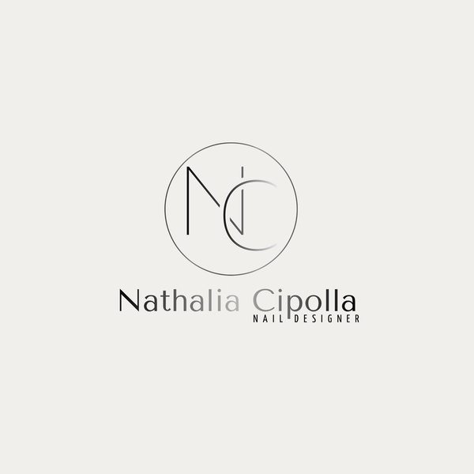
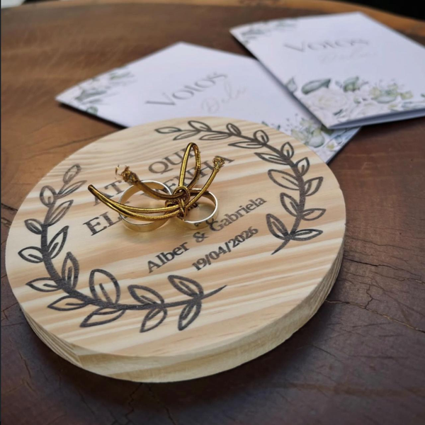
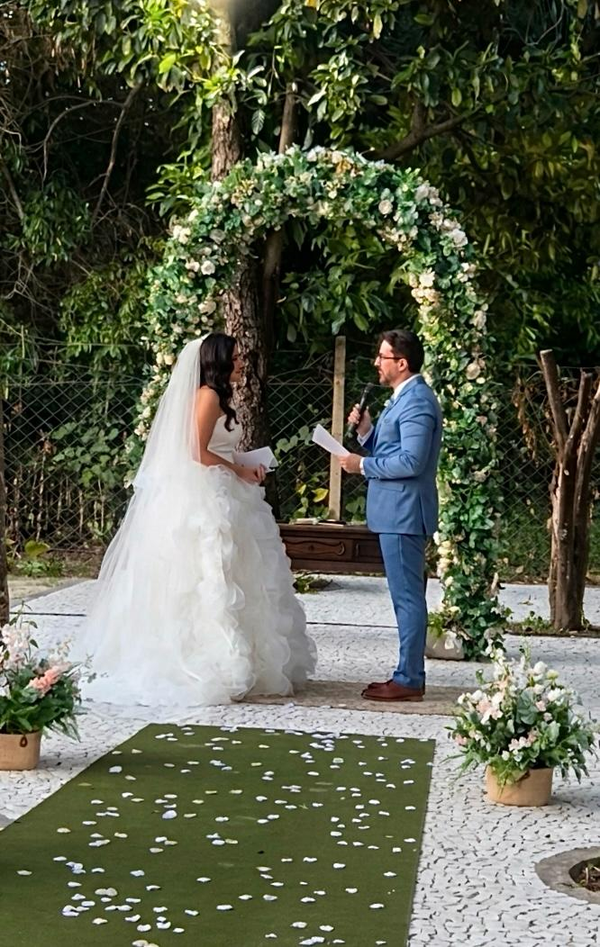

Pessoas
Fotos Profissionais
Ensaios, posicionamento e fotos para redes sociais.
Trabalhos organizados por categoria para o site não quebrar e as imagens manterem proporção.
Ensaios, posicionamento e fotos para redes sociais.

Imagens para delivery, cardápio, comércio e redes sociais.

Galeria de identidades visuais para marcas e negócios.


Registros de cerimônia, detalhes e conteúdos para eventos.

Artes para datas especiais, eventos e campanhas.
Comparativo de alcance antes e depois da gestão estratégica.
25 Dez → 24 Jan
24 Jan → 22 Fev
Aumento de alcance após estratégia.